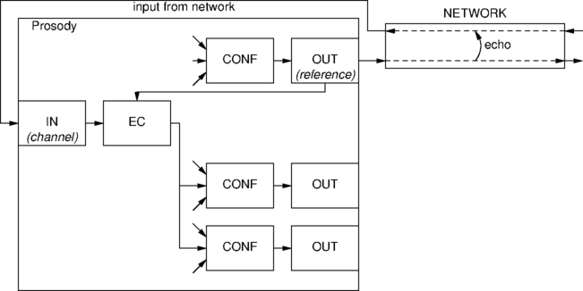
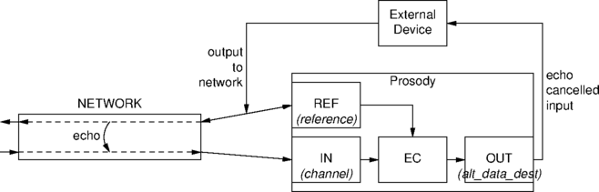
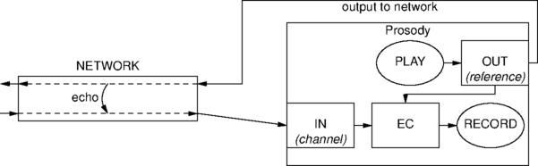

This application note describes the characteristics of the enhanced echo cancellation algorithm included in the TiNG echocan module.
The algorithm is designed to cancel echo created when a signal encounters an impedance mismatch in the telephone network, such as that typically caused by a two to four wire (hybrid) conversion in an analogue phone. This type of echo may be exacerbated by distance and by certain kinds of network equipment. The algorithm is not designed to cancel acoustic echo, such as that caused by using a speaker phone in a small room.
The algorithm has the following key features:
Although the algorithm has two distinct phases, the core operations are the same for each.
During this phase, some cancellation of echoes will occur, but the primary objective is to estimate the echo path delay. This phase will generally complete very soon after the reference signal's echo first appears on the primary channel. After that, the cancellation phase starts.
Once the echo path delay estimate has been validated, the delays used for cancellation are restricted to an appropriate range, and a detailed estimate of the echo dispersion is built up. The cancellation filter is usually fully adapted within half a second of this phase starting (provided an echo is present and is not obscured by double-talk).
Both delay estimation and echo cancellation are performed by a linear adaptive filter, using a modified form of Normalised Least Mean Square (NLMS) algorithm with enhancements to improve convergence rate, while ensuring stable and robust adaptation. In order to give optimal speech recognition performance, non-linear processing and comfort noise can be disabled.
To get the best performance from an echo canceller, each call should begin with at least half a second of out-going speech to give the algorithm a chance to adapt to any echo which may be present.
Users should be aware that, as with any echo canceller, even when fully adapted, some residual echo will often remain (typically at a level 30dB below the out-going signal), so some applications will require muting (non-linear processing) in addition to echo cancellation. If there is a poor signal-to-noise ratio, or if the caller talks over the initial echo, the adaptation period may be extended.
It is also worth noting that the residual echo level is roughly proportional to the out-going signal level, but it can be larger if the signal has been distorted. Such distortion is more common with larger out-going signals, making it doubly important that the amplitude of the out-going signal is not set too high. Note also any echo which is within 6db of outgoing signal amplitude will probably not be cancelled.
The TiNG firmware modules required for echo cancellation are called echocan and passthru.
The input signal presented to the signal path is echo-cancelled using the reference specified in sm_path_echocancel() and the resulting signal is available from the path output datafeed.
The input from party A is echo-cancelled, using the output to party A as a reference. In other words, we are expecting the input from A to contain an echo of the output we are sending to A and the purpose of echo cancellation is to remove it. Other conference parties take this conditioned signal as their input. The relevant fields in the parameter block passed to sm_condition_input() are listed below.
channel; // the input from Party A reference; // Party A's output channel reference_type; // is kSMInputCondRefUseOutput alt_dest_type; // is kSMInputCondAltDestNone
Notes:
channel is allocated using
sm_channel_alloc_placed_parms.type = kSMChannelTypeInput.
reference channel is allocated using
sm_channel_alloc_placed_parms.type = kSMChannelTypeOutput.
channel and reference must be allocated
so that they are on same module.

Two inputs are required. the channel which is to have echo removed, and the reference channel, which is the signal the may appear in the input as echo. The relevant fields in the parameter block passed to sm_condition_input() are listed here.
channel; // the input from the network reference; // is a tap from the output to network reference_type; // is kSMInputCondRefUseInput alt_data_dest; // is a channel allocated using kSMChannelTypeOutput alt_dest_type; // is kSMInputCondAltDestOutput
Notes:
channel is allocated using
sm_channel_alloc_placed_parms.type = kSMChannelTypeInput.
reference channel is allocated using
sm_channel_alloc_placed_parms.type = kSMChannelTypeInput.
alt_data_dest channel is allocated using
sm_channel_alloc_placed_parms.type = kSMChannelTypeOutput.
channel and reference must be allocated
so that they are on same module.

Echo cancellation is applied to the input to a Prosody record channel and the result is recorded. The reference is a Prosody replay channel. The record and replay can use the same channel, since they do not interfere with each other. The relevant fields in the parameter block passed to sm_condition_input() are listed here.
channel; // is the channel reference; // is also the channel reference_type; // is kSMInputCondRefUseOutput alt_dest_type; // is kSMInputCondAltDestNone
Note:
channel is allocated using
sm_channel_alloc_placed_parms.type = kSMChannelTypeFullDuplex.
It is also possible to do this with an output-only channel used for the replay and an input-only channel used for recording and echo-cancellation.

Document reference: AN 1339